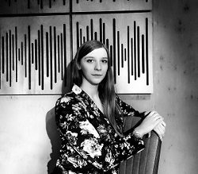
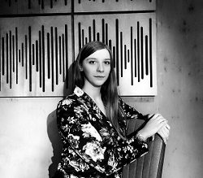

Our Team
 


- BEATA KAWKA producer, director
- DUBBING PRODUCER
- Asterix and Obelix vs. Caesar
- Garfield (co-director)
- Ice Age
- The Polar Express
- A Bug’s Life
- Recess: School's Out
- E.T. the Extra-Terrestrial
- Harry Potter and the Philosopher’s Stone
- Harry Potter and the Chamber of Secrets
- Harry Potter and the Prisoner of Azkaban
- Scooby Doo 2: Monsters Unleashed
- Good Boy!
- Santa Clause 2
- The Little Mermaid
- The Magic Sword
- Iron Giant
- Pokemon. Film 1
- Pokemon 2000
- TEA
- Cats & Dogs
- Cats & Dogs 2
- Harry Potter and the Order of the Phoenix
- Harry Potter and the Half-Blood Prince
- Harry Potter and the Deathly Hallows: Part 1
- Harry Potter and the Deathly Hallows: Part 2
- Golden Compass
- Speed Racer
- ILONA CZECH-KŁOCZEWSKA sound engineer
- EDITING
- Harry Potter and the Philosopher's Stone
- Harry Potter and the Prisoner of Azkaban
- Scooby Doo 2: Monsters Unleashed
- Good Boy
- Korowód - reż. Jerzy Stuhr
- TV COMMERCIALS
- Chupa Chups, POLFARMA , EDF, Cartoon Network spots
- PHONOGRAPHY
- Recordings for DUX Recording Producers - IL CANTO - "Impressions"
- DVD & TV MOVIES
- Avalon High
- Camp Rock 2
- Lemonade Mouth
- Tinker Bell and the Lost Treasure
- The Little Mermaid: Ariel's Beginning
- Bob the Builder
- MADE: The Movie
- Date with the Vampire
- Santa Buddies
- Jumping Sheep

- AGNIESZKA MATYSIAK director
- Ice Age 2: The Meltdown
- Harry Potter and the Prisoner of Azkaban
- Harry Potter and the Goblet of Fire
- Scooby Doo 2: Monsters Unleashed
- The Polar Express
- Good Boy!
- Harry Potter and the Order of the Phoenix
- Harry Potter and the Half-Blood Prince
- Harry Potter and the Deathly Hallows: Part 1
- Harry Potter and the Deathly Hallows: Part 2
- Thea
- The Golden Compass
- Speed Racer
- Cats & Dogs 2
- Journey to the Center of the Earth
- Legend of the Guardians
- DVD & TV MOVIES
- The Little Polar Bear
- John Paul II: The friend of all humanity
- ZDZISŁAW ZIELIŃSKI sound engineer
- Good Boy!
- The Polar Express
- Peter Pan 2: Return to Neverland
- The Santa Clause 2
- Harry Potter and the Order of the Phoenix
- Thea
- The Golden Compass
- Speed Racer
- Cats & Dogs 2
- Journey to the Center of the Earth
- Legend of the Guardians: The Owls of Ga'Hoole
- Harry Potter and the Deathly Hallows: Part 1
- Harry Potter and the Deathly Hallows: Part 2
- The Easter Bunny is Comin' to Town (DVD), Nascar, Delfins,
- Galapagos, Amazing Caves For IMAX, Cinderella 2 (VHS)